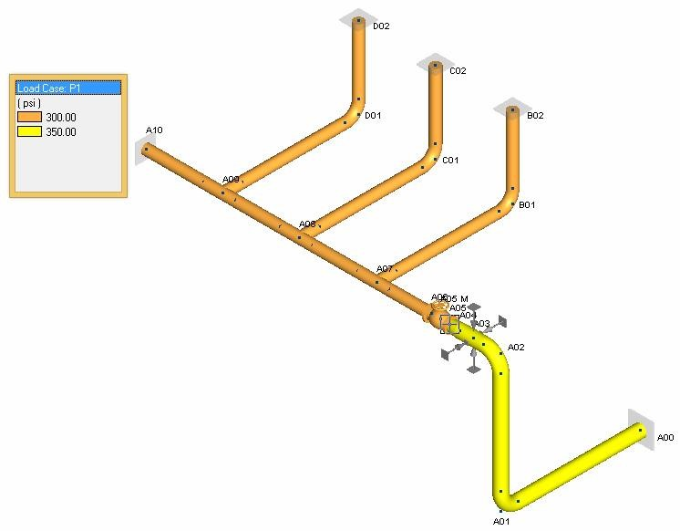

Graphically Reviewing Pressure and Temperature Loads
.png) Now that you have learned how to
modify temperature and pressure loads using the menu and input grid
methods, you will learn how to graphically review these temperature
and pressure loads
Now that you have learned how to
modify temperature and pressure loads using the menu and input grid
methods, you will learn how to graphically review these temperature
and pressure loads
- Select Show > Show Setup > Show Options to display the following dialog. Select the
Operating Pressure option from the Color Plots tab and press OK.
- In the Show Pressure dialog, select Operating loadcase 1 and press OK.
A color-coded representation of the model is displayed. Note the legend that appears in the left
margin of the drawing area. Two P1 load cases are defined as shown in the following figure:
| Note: | Note that the SI values are also included in the figure. |

- Now let’s take a look at Pressure Case P2. Select Show > Show Setup > Show Options and repeat the steps followed for Operating loadcase 1.
(Optional): Use the Ctrl + U shortcut to display the Show Pressure dialog and select operating load case 2 and press OK. The model appears as shown in the following figure.
| Note: | Note that the SI values are also included in the figure. |
- To view the Temperature loads, select Show > Show Setup > Show Options, select
Operating Temperature from the Color Plots tab of the Show Options dialog and press OK.
- In the Show Temperature dialog, select the defaults, (All) for operating loadcase and (All) for temperature value as shown in the following figure:
This will allow you to scroll to other temperature cases by repeating Ctrl + T or clicking the toolbar button. When you press OK, the temperature case 1 will be shown as follows:
| Note: | Note that the SI values are also included in the figure. |
- Press Ctrl + T again to review T2.
| Note: | Note that the SI values are also included in the figure. |
-
.jpg) Select File > Save
> Save to save the model.
Select File > Save
> Save to save the model.